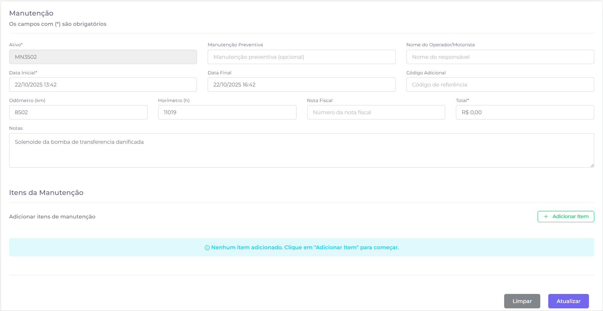
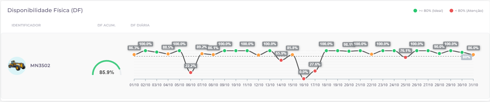
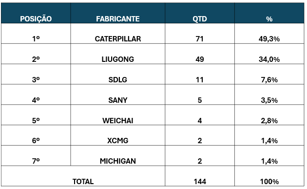
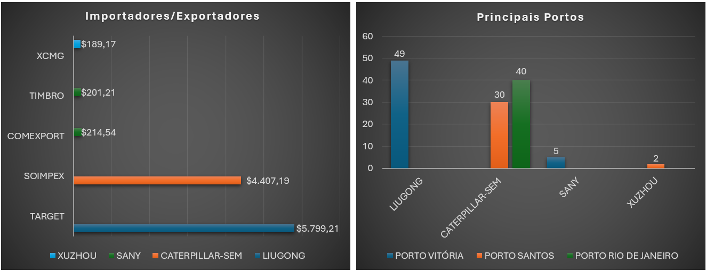
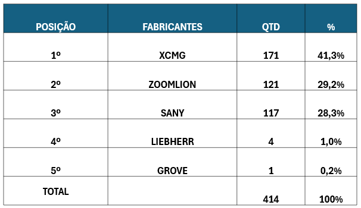
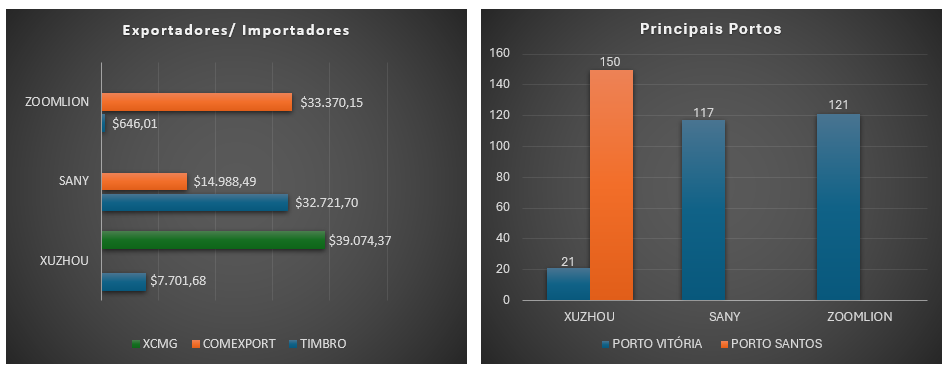

GESTÃO ESTRATÉGICA
Gestão de Kickoff e Ramp-Up Garante Sucesso na Entrega de Equipamentos de Grande Porte


Engenharia de Aplicação implementa sistema integrado de gestão para atender ao crescimento nas operações de mineração
| Local/Cliente | Responsável | Local/Cliente | Responsável |
|---|---|---|---|
| Britadores | Christiano Gomes | Casa de Pedra | Carlos Henrique |
| RD e G3 | Guilherme Costa | Porto Tubarão | Matheus Barros |
| Itagiba | Ben-Hur | Simak e Zocar | Alan |
| Teofilândia | Luan Oliveira | Patrocínio | Felipe Martins |
| Harsco | Matheus Barros | Britacal - Unaí | Hebert |
| CMOC | Hebert | Britacal - Coromandel | Felipe Martins |
| Vale - Norte | Johnny e Priscilla | Carajás | Gabriel e Paulo |
| S11D | Robert e Monica | Serra Leste | Christoph e Jeronimo |
| Corredor | Seção | Processo | Responsável |
|---|---|---|---|
| Sul | Visita a Clientes | Relatórios | Antônio Ribeiro |
| Norte | Relatórios | João Luiz | |
| Brasil | Cronograma | Bruno Custódio | |
| Brasil | Field Follow | Relatórios | Eduardo Teles |
| Processo | Responsável |
|---|---|
| Relatórios | Tedmiler, Vitor, Ebson |
| Telemetria | Danilo Cezar |
| Administrativo e Gestão de Custos | Amanda Cristina e Ryan |
| Suporte Internacional | Marcelo Chen |
| Report e Acompanhamento | |
| Vale/CSN | André Kallas |
| RD/G3/Simak | Bruno |
| Harsco/Zocar/Crec | Fernando |
A XCMG Brasil mantém um compromisso inabalável com a performance de seus equipamentos em campo, realizando um acompanhamento diário e detalhado da Disponibilidade Física (DF) de suas máquinas nas operações dos clientes. Este monitoramento permite à equipe de Engenharia de Aplicação identificar rapidamente tendências, atuar preventivamente e otimizar a operação, garantindo que os equipamentos XCMG entreguem o máximo de produtividade.

O acompanhamento contínuo da DF mensal é uma ferramenta estratégica para a Engenharia de Aplicação, permitindo a identificação de tendências sazonais, a avaliação do impacto de melhorias implementadas e o planejamento de ações preventivas. A meta de 80% de DF é um referencial de excelência que guia os esforços da equipe para garantir a máxima produtividade dos equipamentos XCMG em campo.


O acompanhamento da Disponibilidade Física (DF) acumulada no mês de setembro nos diferentes clientes oferece uma visão clara da performance dos equipamentos XCMG. Os dados de 01/09 a 30/09 mostram um desempenho sólido em clientes como R&D e G3, com DF de 84,55% e 85,61%, respectivamente, indicando alta confiabilidade. Em paralelo, operações como SIMAK e CSN registraram DF de 75,53% e 76,81%, valores que, embora abaixo da meta de 80%, demonstram uma performance consistente que está sendo monitorada para otimização. O caso do CREC-8, com 44,22%, é um ponto de atenção que já está recebendo tratamento focado da nossa equipe técnica para identificar as causas e implementar ações corretivas, reforçando nosso compromisso com a melhoria contínua e a transparência.
Integração automática entre manutenção e disponibilidade física garante dados atualizados em tempo real e amplia a confiabilidade dos indicadores
A integração entre os módulos de manutenção e disponibilidade física (DF), desenvolvida pela Onboard em parceria com a XCMG, marca um novo avanço na gestão de performance dos equipamentos em campo.
Agora, sempre que uma manutenção é registrada como “executada” no sistema, o cálculo da DF diária é atualizado automaticamente no painel de Relatório de Disponibilidade Física do equipamento. O recurso elimina a necessidade de cálculos manuais e garante que o indicador reflita, em tempo real, o impacto das intervenções sobre a operação.
Ao observar o cenário de 2025, fica evidente o avanço da chinesa Sany, que desponta com uma participação de mercado em ascensão, consolidando-se como uma das principais referências do setor. Em paralelo, a Bobcat preserva sua posição, sustentada especialmente pelo desempenho expressivo no segmento de mini escavadeiras, categoria que sozinha representa 27,0% do Market Share.
O cálculo segue a lógica operacional de disponibilidade, considerando o total de 24 horas por dia e descontando o período em que o ativo permaneceu em manutenção. Assim, se uma máquina ficou seis horas parada, a DF diária registrada será de 75%, reforçando a rastreabilidade e a confiabilidade dos dados.
Com isso, os analistas de performance passam a ter uma visão ainda mais precisa da disponibilidade acumulada e dos períodos críticos de cada equipamento, permitindo respostas mais rápidas e decisões técnicas mais assertivas.
A novidade também reforça o compromisso da XCMG em evoluir continuamente os sistemas de monitoramento e gestão de ativos, promovendo maior transparência, eficiência e controle operacional para os clientes em campo.
A equipe de Engenharia de Aplicações da XCMG desenvolveu e implementou um novo sistema inovador, denominado FMS (Fleet Management System), para o registro e análise das paradas de equipamentos.

O FMS foi criado para otimizar a coleta de informações sobre as paradas em manutenção, permitindo gerar de um perfil de perdas mais robusto e detalhado. Além disso, o sistema integra eficientemente os dados do Logbook, consolidando as informações para uma análise mais completa.

Com o FMS, a XCMG aprimora sua capacidade de identificar padrões, otimizar estratégias de manutenção e, consequentemente, elevar a performance e a disponibilidade de seus equipamentos.
A XCMG implementou um avançado painel de controle para gerenciar notificações técnicas de equipamentos em parceria com a VALE. Essa ferramenta estratégica permite acompanhar a evolução percentual de aplicação das notificações e utiliza uma curva S para alinhar o monitoramento com a previsão de entrega de peças e a programação do cliente.

O painel também categoriza as notificações por objetivos e sistemas do equipamento, oferecendo uma visão detalhada das intervenções. Um diferencial crucial é a medição da eficiência das notificações, avaliando a recorrência de falhas após a aplicação, o que garante a efetividade das ações corretivas.

Essa iniciativa reforça o compromisso da XCMG em otimizar a performance e a confiabilidade dos equipamentos, fortalecendo a parceria estratégica com a VALE.
A XCMG está verificando o desempenho do XDE260 na CSN ...
Na CSN casa de Pedra o caminhão apresenta uma DF ...
A XCMG continua a impulsionar a inovação no setor de equipamentos pesados, com uma série de novas máquinas de alta tecnologia atualmente em processo de homologação. Esses equipamentos, que prometem maior eficiência e sustentabilidade, estão passando por rigorosos testes e avaliações para garantir que atendam aos mais altos padrões de qualidade e desempenho antes de sua plena introdução no mercado brasileiro. A empresa também anunciou a inclusão de novos modelos em seu cronograma e atualizou o status de outros processos em andamento.

O processo de homologação na XCMG é uma etapa fundamental que se inicia com a criação detalhada da ficha técnica do produto, alinhando o desenvolvimento às demandas do mercado e normas regulatórias. Em seguida, o equipamento é submetido a testes rigorosos, incluindo avaliações em campo e simulações, com a colaboração de clientes para otimização. A conclusão do processo é validada pelo aceite formal do cliente, assegurando que a XCMG entregue soluções robustas, eficientes e confiáveis.
Entre as atualizações, destaca-se a inclusão da Empilhadeira Diesel (XCF1606K), que será destinada à operação S11D da Vale, e do Caminhão Diesel (XG70), que chegou à planta de Pouso Alegre para avaliação. O Caminhão Elétrico XGE150EV Plus e a Motoniveladora Elétrica GR350EP já estão no Brasil; esses equipamentos passarão por um processo de tropicalização antes de serem entregues ao cliente, com previsão de início de operação ainda este ano. Para o Terminal Tractor XPT90K, a empresa está na fase de levantamento de documentação e realização de reuniões semanais para garantir o melhor atendimento. O Caminhão Diesel-Elétrico XDE260 está em testes na CSN, e a data de conclusão da Carregadeira XC9150 foi postergada para o final de Novembro.
Este portfólio em constante evolução demonstra o empenho da XCMG em expandir sua oferta com máquinas de ponta, adaptadas às necessidades específicas de grandes clientes como Vale e CSN. A empresa garante que cada novo equipamento passe por todas as etapas necessárias para assegurar sua excelência, contribuindo significativamente para a eficiência e a produtividade das operações no Brasil.
A XCMG Brasil segue firme em seu compromisso com a inovação e a qualidade, mantendo um portfólio de homologações de componentes em constante evolução. Embora o mês de outubro não tenha trazido novas conclusões de homologação, a empresa continua a trabalhar no desenvolvimento e na validação de uma série de projetos que prometem elevar ainda mais o patamar tecnológico de seus equipamentos. Este processo contínuo de aprimoramento é um pilar fundamental para garantir que cada máquina XCMG entregue a máxima performance, segurança e eficiência a seus clientes.

Atualmente, diversos projetos inovadores estão em andamento. Para as carregadeiras, o desenvolvimento do Joystick JS1-H Steer by Wire da Danfoss segue em andamento, com o objetivo de aprimorar a precisão e o conforto na operação. Outros projetos, como o sistema de lubrificação automática para a XGA5905 e os sistemas de balança para o XE2000 e caminhões de 3 eixos, também avançam, com foco na durabilidade, na eficiência e na precisão dos equipamentos.
Para aprimorar a gestão e a transparência de seus processos, a engenharia de aplicação está desenvolvendo uma nova plataforma no SharePoint. Essa ferramenta permitirá um acompanhamento mais claro e objetivo do status de cada componente em processo de homologação, otimizando a comunicação interna e com parceiros. A iniciativa reflete o compromisso da empresa com a melhoria contínua e a eficiência em todas as suas operações.
A XCMG reitera seu empenho em impulsionar a inovação e a qualidade em todos os seus produtos e processos. A empresa continua a investir no desenvolvimento e na validação de novos componentes, e as atualizações sobre as conclusões de homologação serão compartilhadas assim que disponíveis, reforçando o compromisso da XCMG em oferecer ao mercado equipamentos cada vez mais avançados e confiáveis.
Entre os dias 21 e 24 de outubro de 2025, a equipe da XCMG, composta por Eduardo Teles, Analista de Performance, e João Luís Menezes, Instrutor de Eficiência Operacional, realizou uma visita técnica estratégica à mina S11D da Vale, em Canaã dos Carajás (PA). O objetivo da visita foi duplo: acompanhar a operação da pá carregadeira de grande porte LeTourneau L-2350 em condições reais de mineração e avançar no processo de homologação da nova carregadeira XCMG XC9150, um marco para a entrada da marca no segmento de equipamentos de grande porte no Brasil.
A análise da LeTourneau L-2350, uma máquina com capacidade para 70 toneladas e peso operacional de 262 toneladas, revelou um desempenho robusto, com 94% de disponibilidade mecânica, próximo à meta de 96% da Vale. Operando em um ambiente desafiador, com rochas de alta dureza como jaspelito e canga laterítica, a L-2350 demonstrou alta eficiência no carregamento em “V”, com um ciclo médio de 3 minutos para 4 passes em caminhões CAT 793. A visita permitiu à equipe da XCMG observar de perto as boas práticas operacionais da Vale e coletar dados valiosos para o aprimoramento de seus próprios equipamentos.
Paralelamente, a equipe da XCMG participou de uma reunião técnica crucial com representantes da Vale e da Progen para tratar da liberação da nova carregadeira XCMG XC9150. Com uma caçamba de 15 m³ e peso operacional de 50 toneladas, a XC9150 representa um avanço significativo para a XCMG no mercado de grande porte. Durante a reunião, foram discutidas as pendências para a liberação do equipamento, que incluem a substituição dos pneus para adequação às normas da Vale, a apresentação de laudos técnicos e a instalação de sistemas de segurança, como o cinto de três pontas e o sistema AVI.
A visita técnica à mina S11D reforça o compromisso da XCMG em entender as necessidades de seus clientes e em desenvolver soluções de alta performance para o setor de mineração. O acompanhamento da operação da L-2350 e os avanços na homologação da XC9150 demonstram a capacidade da empresa em competir no segmento de grande porte, oferecendo equipamentos robustos, eficientes e seguros, e consolidando sua presença como uma parceira estratégica para as maiores mineradoras do país.

A XCMG Brasil reafirma seu compromisso com a excelência e a proximidade junto a seus clientes por meio de uma agenda de visitas e atividades em campo que demonstra a dedicação de sua equipe. O cronograma de novembro destaca a presença estratégica da empresa em diferentes regiões do país, com o objetivo de oferecer suporte técnico, treinamento e análise para aplicação de equipamentos, fortalecendo parcerias e garantindo a máxima performance das soluções XCMG.
Entre os dias 3 e 7 de novembro, a equipe da XCMG estará mobilizada em diversas frentes. Em Pouso Alegre (MG), Antônio Ribeiro se dedicará à preparação de material para o treinamento do caminhão elétrico XGE150, uma iniciativa que reforça o compromisso da empresa com a inovação e a sustentabilidade. Simultaneamente, Bruno Custódio prestará suporte geral na mesma localidade, garantindo o bom andamento das operações e o apoio necessário aos clientes da região.
No mesmo período, Eduardo Teles realizará uma visita à Destac Mineração, em Itinga (MG), para analisar a aplicação de equipamentos XCMG, uma ação que visa otimizar o uso das máquinas e identificar novas oportunidades de colaboração. Em outra frente, João Luiz estará em Canaã/Carajás (PA) para a mobilização em S11D da Vale, onde realizará a revisão do plano de manutenção, uma atividade crucial para garantir a confiabilidade e a longevidade dos equipamentos em uma das maiores operações de mineração do mundo.
Essa presença constante em campo, com uma equipe de especialistas dedicada a entender e atender às necessidades de cada cliente, é um diferencial que consolida a XCMG como uma parceira estratégica e confiável. A empresa demonstra, mais uma vez, que seu compromisso vai além da venda de equipamentos, englobando um suporte completo e uma busca contínua pela excelência operacional de seus clientes.
Durante o mês de outubro, a XCMG Brasil realizou um acompanhamento técnico (Field Follow) na operação da Terra Minas, em Barão de Cocais (MG), com foco no desempenho do conjunto de britagem composto pelos modelos XPE0912 (mandíbulas) e XFY1561 (cônico). A visita, conduzida pelo engenheiro de aplicação Christiano Gomes, não apenas estreitou o relacionamento com o cliente, mas também resultou em um impressionante aumento de 60% na produtividade, saltando de 315 t/h para 500 t/h. Esse resultado foi alcançado através da otimização do processo de alimentação do conjunto de britagem, que passou a ser realizado por uma escavadeira de maior porte, a XCMG XE490DK.
A operação da Terra Minas, que iniciou suas atividades há cerca de 10 meses, se dá em um cenário desafiador, com a extração de minério de ferro (Canga e Itabirito) de alta dureza. Os equipamentos XCMG, recém-adquiridos e com aproximadamente 400 horas de uso, têm demonstrado excelente performance e confiabilidade. O operador Eduardo Santos, com 10 anos de experiência, destacou a facilidade de controle, a estabilidade e a potência dos britadores XCMG, classificando a performance como "excelente" e ressaltando a boa eficiência e o fácil acesso para manutenção.
Além do ganho de produtividade, a visita técnica identificou uma forte oportunidade de padronização da frota da Terra Minas com equipamentos XCMG. Atualmente, a frota é composta por um mix de marcas, e a padronização traria benefícios como a simplificação da manutenção, a otimização da gestão de peças e a redução de custos operacionais. A XCMG se posiciona como uma parceira estratégica, oferecendo uma solução integrada que vai além do fornecimento de equipamentos, incluindo suporte técnico, treinamento e contratos de manutenção.
Como próximos passos, a XCMG irá desenvolver um plano de transição para a padronização da frota, estruturar uma proposta de contrato de manutenção e suporte técnico, e propor um programa de capacitação contínua para operadores e técnicos. A visita à Terra Minas reforça o compromisso da XCMG em oferecer soluções completas e personalizadas, que impulsionam a produtividade e a eficiência de seus clientes, consolidando parcerias de longo prazo e maximizando os resultados em campo.
Publicado em: 27 de Outubro de 2025
A fabricante japonesa e a empresa do Vale do Silício desenvolverão em conjunto uma plataforma unificada de veículos definidos por software (SDV, na sigla em inglês) e autonomia para a próxima geração de equipamentos de mineração, com atualizações contínuas, maior precisão operacional e implantações mais rápidas.
Saiba maisPublicado em: 21 de Outubro de 2025
Hitachi assinou um acordo de 5 anos com a Technological Resources Pty, subsidiária da Rio Tinto, para avançar tecnologias de operação remota para escavadeiras hidráulicas ultra-grandes.
Saiba maisPublicado em: 21 de Outubro de 2025
A mina Santa Rita, na Bahia, e operada pela Atlantic Nickel, é o 1º investimento do novo fundo de US$ 1 bilhão criado pela parceria entre Appian Capital Advisory e International Finance Corporation (IFC). A operação produz níquel, cobre e cobalto – fundamentais para transição energética e tecnologias digitais.
Saiba maisPublicado em: 21 de Outubro de 2025
A Liberty Metals Ltd firmou um contrato para adquirir 100% de participação em três projetos de minerais críticos: o Projeto de Rutilo de Rocha Dura da Paraíba, o Projeto de Areias Pesadas de Minerais do Rio Grande (HMS), no Rio Grande do Sul, e o Projeto de Areias Pesadas de Minerais de Alcobaça e Terras Raras, na Bahia.
Saiba maisPublicado em: 20 de Outubro de 2025
A GoldMining Inc. divulgou os resultados iniciais dos ensaios de seu programa de perfuração RC de 2025, em seu Projeto São Jorge, no Pará. O programa em andamento foi projetado para testar novos alvos fora das áreas conhecidas de mineralização.
Saiba maisPublicado em: 21 de Outubro de 2025
O setor mineral brasileiro faturou R$ 76,2 bilhões no terceiro trimestre, um salto de 34% ano a ano, impulsionado principalmente pelo incremento da receita do minério de ferro no período.
Saiba maisPublicado em: 17 de Outubro de 2025
A Lara Exploration Ltd informa que sua subsidiária integral brasileira assinou um contrato de compra e venda para adquirir uma licença de exploração adjacente ao Projeto de Cobre e Ouro Planalto da Lara, em Carajás.
Saiba maisPublicado em: 15 de Outubro de 2025
O parecer estabelece metas e indicadores mais objetivos, entre eles: o fortalecimento da divulgação de dados gerados pelo comitê de minerais críticos estratégicos, de instrumentos de fomento à extração e beneficiamento dos desses materiais; reforça a estrutura de apoio ao licenciamento já existente.
Saiba maisPublicado em: 15 de Outubro de 2025
De acordo com projeções da Wood Mackenzie, no cenário base a demanda total por cobre deverá aumentar 24%, para 42,7 Mtpa, até 2035, impulsionada principalmente pelo desenvolvimento econômico global e pela eletrificação.
Saiba maisPublicado em: 16 de Outubro de 2025
A combinação de infraestrutura modular e software inteligente torna os data centers pré-fabricados aliados para uma mineração mais eficiente e com menor pegada de carbono.
Saiba maisPublicado em: 17 de Outubro de 2025
A PERUMIN 37 confirmou a importância estratégica do Primeiro Congresso de mineração do Norte – NORMIN 2025. A feira em Arequipa confirmou que a região de Cajamarca se posiciona como peça-chave no fornecimento global de minerais críticos para a revolução energética do século XXI.
Saiba maisPublicado em: 17 de Outubro de 2025
O país enfrenta um momento decisivo com contexto internacional favorável, impulsionado por um novo superciclo de minerais, com preços recordes do cobre e do ouro. Porém, a incerteza política e a falta de previsibilidade nas decisões públicas ameaçam enfraquecer essa situação.
Saiba maisPublicado em: 21 de Outubro de 2025
As exportações de mineração do Peru alcançaram US$ 35,608 milhões entre janeiro e agosto de 2025, refletindo um crescimento de 16,2% em relação a 2024. O aumento nos preços do ouro e do cobre impulsionou as vendas de mineração, que representaram 65% do total das exportações do Peru.
Saiba maisPublicado em: 21 de Outubro de 2025
PPX Mining Mantém 100% do Proyecto Igor, um ativo de ouro e prata localizado na faixa de prateada e dourada do norte peruano. A companhia busca expandir sua pegada de mineração e desenvolver um projeto de escala distrital com múltiplas zonas e depósitos minerais.
Saiba maisPublicado em: 16 de Outubro de 2025
O diretor-presidente do IBRAM, Raul Jungmann, sublinhou o papel da mineração como agente estratégico na transição climática global e reafirmou o compromisso do setor com uma atuação responsável e alinhada à agenda da COP30.
Saiba maisPublicado em: 13 de Outubro de 2025
Evento reforça o compromisso do setor mineral com a sustentabilidade e lança livro sobre transformações de áreas mineradas em São Paulo. O evento envolveu os tópicos: regulação da mineração no estado, boas práticas no setor e pós-mineração uso e transformação de áreas mineradas.
Saiba maisPublicado em: 16 de Outubro de 2025
O vice-presidente do IBRAM destacou que o Brasil possui vantagens estratégicas importantes para liderar uma transição sustentável no setor mineral, como a diversidade geológica, uma matriz energética majoritariamente limpa, elevado potencial de industrialização e uma legislação ambiental sofisticada.
Saiba maisPublicado em: 29 de Outubro de 2025
A articulação inédita envolvendo o governo dos EUA, a indústria da mineração brasileira e o governo do Brasil, busca canalizar investimentos norte-americanos em projetos de produção de minerais críticos e estratégicos em território nacional. A participação do governo brasileiro ainda será tratada.
Saiba maisUm novo levantamento sobre a distribuição de equipamentos da XCMG no Brasil, realizado em outubro de 2025, revela um crescimento expressivo e uma capilaridade cada vez maior da marca no território nacional. O mapa de cobertura da Engenharia de Aplicação, atualizado com os dados mais recentes, mostra que a XCMG atingiu a marca de 1.993 equipamentos em operação, um aumento significativo em relação ao levantamento anterior, que registrava 1.608 máquinas. A maior concentração de equipamentos continua na região Sudeste, seguida pelo Centro-Oeste, Nordeste, Norte e Sul, respectivamente, além de uma unidade em operação na Guiana.
O mapa interativo, que utiliza círculos para representar o volume de equipamentos em cada região, evidencia a forte presença da XCMG em áreas estratégicas para a mineração, construção e agronegócio. Os círculos maiores indicam um alto volume de máquinas, enquanto os menores representam uma presença mais pontual. As áreas em vermelho no mapa indicam regiões e máquinas que ainda não possuem cobertura de um analista responsável, enquanto as áreas em azul representam as máquinas que já contam com o suporte da equipe de Engenharia de Aplicação da XCMG.

Fonte: Dashboard elaborado pelo departamento.
Ao comparar os resultados de 2024 com o desempenho registrado em 2025, a XCMG apresentou um crescimento relevante em termos de participação de mercado. Embora ainda modesto, o avanço de 0,5% no Market Share demonstra que a marca começa a ganhar maior representatividade nas importações brasileiras.
Até julho de 2025, a empresa já contabilizava 58 equipamentos importados(reportados pela aduana), contra apenas 2 unidades em 2024, o que evidencia um salto significativo em volume. No mesmo período, a indústria como um todo atingiu 12.283 importações, reforçando o espaço ainda em expansão para a XCMG no setor.
Dentro desse contexto, o mercado da construção se mantém como o principal motor de demanda, respondendo por 11.646 unidades em 2025, frente a 10.495 em 2024. Apesar da leve retração no segmento de florestal (381 em 2024 para 323 em 2025), o setor de mineração apresentou evolução, passando de 269 para 314 unidades, o que indica uma diversificação gradual da demanda.
O movimento da XCMG, ainda que tímido em participação percentual, sinaliza um posicionamento estratégico de entrada no mercado brasileiro, sustentado por um crescimento exponencial no volume importado e pela presença cada vez mais competitiva da indústria chinesa no cenário global de máquinas pesadas.

Fonte: MarketPins.
Ao observar o cenário de 2025, fica evidente o avanço da chinesa Sany, que desponta com uma participação de mercado em ascensão, consolidando-se como uma das principais referências do setor. Em paralelo, a Bobcat preserva sua posição, sustentada especialmente pelo desempenho expressivo no segmento de mini escavadeiras, categoria que sozinha representa 27,0% do Market Share.

Fonte: MarketPins.
No campo das marcas tradicionais, nomes como New Holland e JCB continuam presentes entre as dez mais importadas, reforçando sua relevância histórica. No entanto, chama atenção o movimento crescente das fabricantes chinesas, que vêm conquistando espaço de forma consistente no mercado brasileiro. Esse avanço traduz não apenas a competitividade, mas também a boa aceitação dos equipamentos de origem chinesa, cada vez mais requisitados. Dentro desse cenário, destaca-se a presença da XCMG, que figura entre as marcas chinesas de maior participação no Brasil, fortalecendo a percepção de que o país asiático se consolida como protagonista nesse setor.

Fonte: MarketPins.
Por outro lado, observa-se também a manutenção da relevância de equipamentos mais tradicionais e de grande porte, como as carregadeiras, que seguem representando fatias significativas do mercado, com 14,6% (Wheel Loader) e 12,4% (Crawler Excavator), respectivamente. Essa combinação de crescimento das marcas chinesas e estabilidade dos equipamentos clássicos evidencia um mercado em transformação, no qual inovação, competitividade e tradição caminham lado a lado.

Fonte: MarketPins.
Um estudo aprofundado sobre o mercado de importação de motoniveladoras no Brasil, realizado entre janeiro e julho de 2025, revelou um cenário competitivo e dinâmico, com a Caterpillar consolidando sua liderança em volume de unidades importadas. A análise, que abrangeu um total de 144 equipamentos, oferece insights valiosos sobre as tendências do setor, as estratégias dos principais fabricantes e as oportunidades para a XCMG fortalecer sua presença no mercado nacional.
A Caterpillar destacou-se como a principal importadora, com 71 unidades, o que representa 49,3% do total de motoniveladoras importadas no período. A LiuGong seguiu de perto, com 49 unidades (34%), enquanto a SDLG ocupou a terceira posição, com 11 unidades (7,6%). A XCMG, por sua vez, registrou a importação de 2 unidades (1,4%), posicionando-se em sexto lugar no ranking. A análise por peso operacional revelou que a LiuGong domina a faixa de 15 toneladas, com 44 unidades, enquanto a Caterpillar lidera na faixa de 15,2 toneladas, com 40 unidades. A SDLG também demonstrou força em nichos específicos, como as faixas de 13,2 e 16 toneladas.
O estudo também mapeou as rotas de importação, identificando o Porto de Vitória como o principal ponto de entrada de motoniveladoras no país. A LiuGong utiliza o porto para direcionar suas operações para Vitória (ES), enquanto a Sany utiliza o mesmo porto com destino a Cariacica (ES). O Porto de Santos também se destaca, sendo utilizado pela Soimpex, com destino final em Serra (ES), e pelo exportador Xuzhou, que direciona suas cargas para Pouso Alegre (MG), onde está localizada a fábrica da XCMG. Essa logística de importação e distribuição é um fator crucial para a competitividade das marcas no mercado brasileiro.
Diante deste cenário, a XCMG tem a oportunidade de fortalecer sua estratégia comercial e operacional, focando em nichos de mercado e expandindo sua participação. A análise detalhada do volume de importações, das faixas de peso mais demandadas e das rotas logísticas fornece uma base sólida para a tomada de decisões estratégicas, permitindo que a empresa aprimore seu posicionamento competitivo, negocie com fornecedores e planeje suas importações de forma mais eficiente. O mercado de motoniveladoras no Brasil, embora competitivo, apresenta oportunidades para crescimento e consolidação da marca XCMG.
Uma análise aprofundada do setor de importação de guindastes no Brasil, cobrindo os sete primeiros meses de 2025, desenha um panorama de intensa competição, no qual a XCMG se estabeleceu como a principal força em número de unidades trazidas ao país. O levantamento, que considerou um total de 414 equipamentos, fornece uma visão clara sobre as movimentações do setor, as táticas dos grandes fabricantes e as janelas de oportunidade para as marcas ampliarem seu alcance no território nacional.
Com 171 guindastes importados, a XCMG abocanhou uma fatia de 41,3% do total, assumindo a dianteira no ranking. Logo em seguida, a Zoomlion marcou sua presença com 121 máquinas (29,2%), enquanto a SANY se posicionou em terceiro lugar, com 117 unidades (28,3%). Uma análise mais detalhada por capacidade de carga mostra a XCMG com forte presença nas categorias de 40 e 90 toneladas, somando 40 e 37 unidades, respectivamente. A SANY, por outro lado, concentrou seus esforços em nichos de maior porte, como os de 80 e 120 toneladas, com 17 e 22 unidades, e a Zoomlion mostrou competitividade no segmento de 90 toneladas, com 34 equipamentos.
O mapeamento das rotas logísticas revelou que o Porto de Vitória é a principal porta de entrada para esses equipamentos no Brasil. Gigantes como SANY, XCMG e ZOOMLION utilizam o terminal capixaba, direcionando suas operações para a cidade de Cariacica (ES), que se transformou em um hub estratégico. O Porto de Santos surge como uma rota alternativa, explorada de forma exclusiva pela XCMG para abastecer sua fábrica em Pouso Alegre (MG). A eficiência dessa malha de importação e distribuição é um elemento decisivo na disputa pelo mercado brasileiro.
Este cenário de competição acirrada abre espaço para que os fabricantes reforcem suas estratégias comerciais e operacionais, com foco em segmentos específicos e na expansão de suas fatias de mercado. O estudo detalhado do volume de importações e das capacidades mais procuradas oferece um alicerce robusto para decisões estratégicas, permitindo que as companhias ajustem seu posicionamento, otimizem negociações e planejem suas importações com maior precisão. Fica claro que o mercado de guindastes no Brasil, embora desafiador, oferece um terreno fértil para o crescimento e a consolidação das marcas que souberem navegar neste ambiente.
A XCMG Brasil, em um movimento estratégico alinhado às crescentes demandas por sustentabilidade no setor de mineração, planeja um programa de testes com caminhões elétricos na operação da CMOC, uma das maiores produtoras de nióbio e fosfatos do mundo. A iniciativa, que visa avaliar a viabilidade e a performance dos modelos XGE95E e XDR80TE em condições reais de operação, surge como um passo decisivo para a CMOC em seu processo de descarbonização, podendo redefinir o futuro de sua frota, que hoje conta com 43 caminhões a combustão.
Os testes, com duração prevista de três meses e com início ainda este ano, foram um convite da própria CMOC, que busca alternativas para substituir sua frota atual por soluções mais limpas e eficientes. O principal objetivo é coletar dados precisos sobre o desempenho dos caminhões elétricos em uma trajetória de 5 a 6 quilômetros, transportando estéril e fosfato. A performance será medida em ciclos de bateria, tempo de recarga e consumo de energia, fornecendo a base técnica para uma futura licitação focada exclusivamente em equipamentos elétricos.
Uma vez que os equipamentos sejam aprovados neste rigoroso processo de validação, a CMOC planeja lançar um novo edital de contratação, marcando a transição de sua frota de equipamentos a combustão para uma operação puramente elétrica. Esta parceria não apenas reforça o compromisso da CMOC com a redução de sua pegada de carbono, mas também posiciona a XCMG como uma fornecedora chave na eletrificação da indústria de mineração no Brasil.
O programa de testes é uma demonstração da visão de futuro de ambas as empresas, que buscam aliar produtividade com responsabilidade ambiental. A colaboração entre a engenharia da XCMG e a equipe da CMOC será fundamental para garantir a confiabilidade e o desempenho dos caminhões nas primeiras 1.000 horas de operação, abrindo caminho para uma mineração mais sustentável e tecnologicamente avançada no país.
Responsável: José Luciano
E-mail: jose.mendonca@xcmgbrasil.com.br
Responsável: Priscila Sales
E-mail: priscila.sales@xcmgbrasil.com.br
Responsável: Washington Gomes